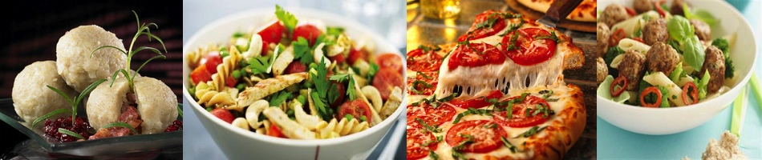

Middagsretter
Middag er dagens høydepunkt! Det er dagens hovedmåltidet, og som regel det eneste varme måltidet vi nordmenn inntar daglig. Det er dessuten det største måltidet vi spiser.Det finnes utallige ulike middagsvarianter, så her har jeg valgt ut de rettene som jeg liker best å spise.
Tradisjonelt sett har middagsmat vært et måltid kort etter middag (tidberepet middag), og ble inntatt midt på arbeidsdagen.
